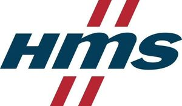

Trade Mark Journal No.2025/039 26 September 2025
WO0000001861239 (9,38,42)
Office of origin: European Union Intellectual Property Office (EUIPO)
Date of International Registration:25 March 2025
Date of designation in the UK:
25 March 2025

The mark contains the colours blue, red and white as a feature of the mark.
The figurative element in red, the letters in blue.
International priority date claimed: 26 September 2024
(European Union Intellectual Property Office (EUIPO))
(019084413)
- Class 9
- Software; application software; computer operating software; embedded software; embedded operating software; computer operating system software; embedded software packages; communication software; software for network and wireless network communications; network checking and monitoring software; software for connecting computers, networks and networking software; communication software for connecting computer network users; communication software for connecting global computer networks; automation, industrial automation and industrial process software; software for automated processes, industry automation, factory automation and building automation; software for industrial devices and machines management and protection; software for hardware management and network management; software for connecting remotely to computers or computer networks; software for remote access to industrial machines; computer software for data storage, display of data, data presentation and data processing, database management and administration, creation and authorisation of access to databases, application and database integration, network communications, computer communications, electronic communications and processing of communications between computers; data processing software for graphic representations; network topology mapping software; reporting software; software for network operating systems, for connection to remote computers, remote terminal units and computer networks; network operating software for network access servers, software for administration of local area computer networks, software for connection to remote computers and computer networks, software for searching and retrieving information on a computer network, communication software used for connecting computer networks; communications processing computer software; software for network connectivity and multi-network connectivity; software for in-vehicle communication, networks and automation systems connectivity; software for protocol conversion; software for protocol conversion, alarm management, data logging, remote monitoring and remote control; software for data conversion; software for wireless and cellular transmission of information, wireless and cellular content delivery and wireless and cellular network access and communications; automation, home automation, building automation, industrial automation, factory automation, and factory to building automation software; software in the fields of and relating to automation, industrial automation, home automation, building automation, home integration, building integration, building management, facility management, energy management, energy measurement, fire protection, hotel management, HVAC, intrusion protection, lightning control, multi-protocol integration, solar power systems and wireless and cellular integration, batteries and battery systems, battery charging systems, automation safety, functional safety, security solutions, robotic electrical control apparatus and mobile robotic electrical control apparatus, and automotive manufacturing solutions; communications server software; database server software; database management software; computer software for controlling and managing access server applications; network management software; network access, communication and administration software; network access server software; computer software for the monitoring of computer systems; software for use in remote meter monitoring; software for diagnostics and troubleshooting; software for network diagnostics and remote diagnostics; software for communications between industrial machines and devices, networks and clouds; software for wireless and cellular communications between industrial machines and devices, networks and clouds; software for safety related communications and wireless and cellular communications between industrial machines and devices, networks and clouds; software for remote access to and support and maintenance of industrial machines; software for monitoring and measuring; software for monitoring, diagnosing and controlling communication between sensors, devices, automated machine systems and automated machine systems in industrial networks including industrial Ethernet and fieldbus systems, and factory manufacturing processes; system software and system support software; production support software; software and software tools for industrial data visualisation, remote management, configuration and analysis of industrial processes and machines; software for network and device security; data and information security software; computer security software; industry operations security software; utility, security and cryptography software; security software; application security software; software for ensuring the security of electronic mail; cloud computing security software; cloud application security software; cloud network monitoring software; infrastructure security software; data, information and network security software; computer application software for use in implementing the Internet of Things [IoT] and Industrial Internet of Things [IIoT]; hardware reliability software; hardware testing software; industrial software; industrial process control and observation software; industrial and building automation software; automation software platforms; safety protocol software; network protocols; network protocols for industrial Ethernet communication, fieldbus communication and network communication; software for implementation of industrial Ethernet, fieldbus and safety protocols, network protocols and communication protocols; software for use as an application programming interface (API); software for machine condition monitoring; software for monitoring of industrial machines; software for monitoring of industrial field installations; machine control software; software for monitoring, analysing and controlling apparatus and instruments; software for monitoring, analysing, controlling and running physical world operations; software for monitoring, analysing, controlling and running industrial operations; software for the monitoring of computer systems; software for remote monitoring and analysis; data and file management and database software; artificial intelligence and machine learning software; software for the integration of artificial intelligence and machine learning; software using artificial intelligence for automation, industrial automation and automated machines systems; hardware; computer networking and data communications equipment; communications equipment; point-to-point communications equipment; intercommunication apparatus; network checking and monitoring hardware; communications equipment for automation and industrial automation; automation, industrial automation and industrial process controls; hardware for automated processes, industry automation, factory automation and building automation; communications electronics for computers; communications systems; apparatus for transmission of communication; terminals and networks for communications and mobile communications; hardware for industrial devices and machines management and protection; hardware for remote access to industrial machines; access control devices; remote terminal units (RTU); data processing equipment; apparatus, instruments and installations for data storage, display of data, data presentation and data processing, database management and administration, creation and authorisation of access to databases, application and database integration, network communications, computer communications, electronic communications and processing of communications between computers; devices for network connectivity and multi-network connectivity; devices for in-vehicle communications, networks and automation systems connectivity; devices for protocol conversion; data acquisition and protocol conversion stations; devices for data conversion; hardware for wireless and cellular transmission of information, wireless and cellular content delivery and wireless and cellular network access and communications; automation, home automation, building automation, industrial automation, factory automation, and factory to building automation devices; robotic process automation [RPA] software; software for autonomous mobile robots (AMR); software for maximizing automation uptime and availability of automated processes; firmware; firmware systems; firmware for industry automation and factory automation; firmware over the air (FOTA); software for use in implementing the Internet of Things [IoT] and Industrial Internet of Things [IIoT]; software for collecting, streamlining, monitoring and visualizing Industrial Internet of Things [IIoT] data and KPIs; software for industrial I/O modules; software for pid controllers; software for testing vulnerability in, and detecting threats to, computers and computer networks; network monitoring software; cloud server software; security and protection software; wireless and cellular security and protection software; security anomaly detection software; root of trust software; computer interfaces; interface software; network interfaces; monitoring interfaces; communication interfaces; device drivers; electronic device software drivers for hardware and electronic devices communication; communications servers [hardware]; network access, communication and administration hardware; network access server hardware; network condition indicators; hardware for diagnostics and troubleshooting; hardware for network diagnostics and remote diagnostics; devices for communications between industrial machines and devices, networks and clouds; devices for wireless and cellular communications between industrial machines and devices, networks and clouds; devices for safety related communications and wireless and cellular communications between industrial machines and devices, networks and clouds; hardware for remote access to and support and maintenance of industrial machines; electric connection boards; connection panels; panels and adapters for connection between devices and industrial devices; panels and adapters for connection and transmission of information and data between devices and systems; connection terminals and connection terminal boards for connection and transmission of information and data between devices and systems; gateways, intelligent gateways and remote gateways for access, collection of information, programming, troubleshooting, support and maintenance of, to and from industrial machines, systems or sensors; monitoring apparatus and instruments for monitoring, diagnosing and controlling communication between computers, sensors, devices and automated machine systems, and factory manufacturing processes; electric and electronic monitoring apparatus; electric and electronic monitoring apparatus for monitoring, diagnosing and controlling communication between sensors, devices, automated machine systems and automated machine systems in industrial networks including industrial Ethernet and fieldbus systems, and factory manufacturing processes; sensors and detectors; optical sensors, electric sensors, infrared sensors, industrial calibration sensors, and sensors for use in automation, industrial automation and factory automation detectors and infrared detectors for use in automation, industrial automation and factory automation; signal conditioners; safety, security and protection devices; electronic security systems for networks; industrial process control monitors; indicator panels; panel meters; industrial controls and controllers; industrial controls incorporating software; communications equipment for industrial Ethernet, fieldbus and network communication; industrial and factory automation controls; automation controllers; measuring, detecting, monitoring and controlling devices and instruments, indicators and controllers; controllers (regulators); indicators and controllers for industrial automation, factory automation and home automation; modular controllers; edge controllers; indicators and controllers for building automation; programmable controls and controllers; programmable logic controllers; robotic electrical control apparatus and mobile robotic electrical control apparatus; monitoring and measuring apparatus, instruments and units; remote monitoring apparatus; electric and electronic monitoring apparatus and instruments; electronic controlling apparatus; electronic surveillance apparatus; electronic installations for the remote control of industrial operations; routers; wired routers; network hardware; network communication and management apparatus and devices; network routers; wireless and cellular routers; switches; telecommunication switches; ethernet switches; network switches; wireless and cellular switches; process control switches; switches for use in the field of industrial communications and applications control; monitor switches; network bridges; wireless and cellular bridges; hubs; network hubs; network servers; network server software; wireless and cellular access points; automation servers; gateways; gateway routers; network gateways; protocol gateways; couplers; coupler modules; converters; protocol converters; media converters; serial converters; repeaters; repeater modules; modular repeaters; fiber optics; fiber optic couplings; fiber optic modems; optical fibers; connectors; optical fiber connectors; fiber optic modules; fiber optic rings; fiber optic ring modules; testing and quality control devices; Internet of Things [IoT] and Industrial Internet of Things [IIoT] gateways; remote access routers; computer hardware modules for use with the Internet of Things [IoT] and Industrial Internet of Things [IIoT] and in electronic devices using the Internet of Things [IoT] and Industrial Internet of Things [IIoT]; industrial I/O modules; pid controllers; communications networks; communications networks for industrial Ethernet, fieldbus and network communication, automation and industrial automation and for Internet of Things [IoT] and Industrial Internet of Things [IIoT]; cloud servers; adapters and apparatus for wireless and cellular transmission of information and wireless and cellular network access; wireless and cellular communication devices, apparatus and instruments; security and protection devices; wireless and cellular security and protection devices; fixed function root of trust [RoT] hardware; programmable root of trust [RoT] hardware; network interface devices; network monitoring interface devices; computer interface units and devices; computer buses; bus interfaces; embedded interfaces; data bus interface units; data bus monitors; chips; chip sets; electronic display interfaces; network modem interfaces; podcasts; batteries; battery packs; battery terminals; battery chargers; charging docks; charging stations; battery energy storage systems.
- Class 38
- Telecommunications; routing and connecting services for telecommunications; routing and connecting services for connecting to industrial process and automation software and industrial machines and devices; services for telecommunications communication between devices and industrial devices and for connection and transmission of information and data between devices and systems; telecommunications services provided via fiber optic, wireless, cellular and cable networks; providing telecommunications connections to the Internet or to databases; providing telecommunications connections to cellular phones and cellular phone networks; providing frame relay connectivity services for data transfer; providing telecommunications connections to networks, global communications networks, local area networks and personal area networks; providing telecommunications connections to wireless fixed and mobile devices; providing telecommunications connections to wireless, fixed and mobile devices and machines over short and long distances; transmission of data, images and text communications between telecommunications and mobile telecommunications devices; telecommunication and data communication via portal to acquire information; telecommunications services for access to databases; transmission and sending of database information via telecommunications networks; providing access for third-party users to telecommunications infrastructures for monitoring industrial processes, process control and automation control; computer communication; digital communications services; mobile, digital, wireless and cellular communications services in the fields of and relating to automation, industrial automation, home automation, building automation, home integration, building integration, building management, facility management, energy management, energy measurement, fire protection, hotel management, HVAC, intrusion protection, lighting control, multi-protocol integration, solar power systems and wireless integration, batteries and battery systems, battery charging systems, automation safety, functional safety, security solutions, robotic electrical control apparatus and mobile robotic electrical control apparatus, and automotive manufacturing solutions; computer communication in the fields of and relating to automation, industrial automation, home automation, building automation, home integration, building integration, building management, facility management, energy management, energy measurement, fire protection, hotel management, HVAC, intrusion protection, lighting control, multi-protocol integration, solar power systems and wireless integration, batteries and battery systems, battery charging systems, automation safety, functional safety, security solutions, robotic electrical control apparatus and mobile robotic electrical control apparatus, and automotive manufacturing solutions; communications by radio waves, mobile phones, and via analog and digital computer terminal; communications by fiber optic networks; computer communication, data and information access; providing access to computers and computer networks; digital transmission and broadcasting services via global computer networks and the Internet; transmission of data and information within a computer network; wireless and cellular communications and wireless and cellular application protocols; wireless and cellular messaging and digital messaging services, wireless and cellular broadband communication services, wireless and cellular electronic transmission of data and information, cable transmission of signals and data; electronic communications services; electronic communication services in the fields of and relating to automation, industrial automation, home automation, building automation, home integration, building integration, building management, facility management, energy management, energy measurement, fire protection, hotel management, HVAC, intrusion protection, lighting control, multi-protocol integration, solar power systems and wireless integration, batteries and battery systems, battery charging systems, automation safety, functional safety, security solutions, robotic electrical control apparatus and mobile robotic electrical control apparatus, and automotive manufacturing solutions; remote data access services; services for remote access to industrial process and automation software and industrial machines and devices providing users with access to telecommunication infrastructure; remote data monitoring services; providing users with access to servers and server infrastructure; data presentation services, namely, data transmission and electronic data transmission of data in textual form, tabular form and graphic form; providing access to electronic communications networks and databases; providing access to in-vehicle networks; services for connecting in-vehicle networks to automation systems; electronic communications services for the transmission of data; information and providing information relating to communications and electronic communications networks; consultancy relating to communications, communications equipment and communications networks; transmission of data and information within industrial communication networks, industrial Ethernet, fieldbus and building automation systems; communication services for the transmission of data, messages and information; transmission of data and information by means of electronic communication; interactive broadcasting and communication services; providing of communications services relating to the exchange of digital data; providing telecommunications connections to a global computer network or databases.
- Class 42
- Computer and software consultancy services; computer programming and software research, design, development, implementing, upgrading, installation and maintenance; design and development of computers, data processing programs, software, operating software for access to a cloud computer network as well as use thereof, software application solutions, computer firmware, computer hardware, computer systems, routers, gateways and switches; design and development of databases; development of computer software and hardware for monitoring and controlling industrial processes; computer software technical support services; support and maintenance services for computer software; technical support services relating to software and applications; provision of technical support in the operation of computing networks; IT support services and troubleshooting of software; providing technical support and on-line support for computer program users and in the supervision of computing networks; configuration of computer software; data and software conversion; design and development of software and hardware for data and multimedia content conversion from and to different protocols; configuration of software and configuration of software platforms; troubleshooting of computer hardware and software problems; troubleshooting of computer hardware and software; troubleshooting of automation and industry automation; troubleshooting in the nature of diagnosing problems with automation and industrial automation products; design and development of automation equipment; computer hardware development and design; design and development of firmware and firmware systems; design and development of software for control, regulation and monitoring of industrial machines; design and development of software and operating software for accessing and using a cloud computing network; design and development of electronic data security systems; development of software and hardware for use with programmable controllers; development of software and hardware for use in connection with telecommunication networks, industrial wireless and industrial Ethernet technology and Industrial Internet of Things [IIoT], communication and sharing of information between industrial machines and devices and industrial networks, industrial Ethernet, fieldbus systems, industry clouds, AI and AI-systems; IT services in the fields of and relating to automation, industrial automation, home automation, building automation, home integration, building integration, building management, facility management, energy management, energy measurement, fire protection, hotel management, HVAC, intrusion protection, lighting control, multi-protocol integration, solar power systems and wireless integration, batteries and battery systems, battery charging systems, automation safety, functional safety, security solutions, robotic electrical control apparatus and mobile robotic electrical control apparatus, and automotive manufacturing solutions; IT services for data and information protection; technological advisory services relating to machine engineering analysis; technological analysis services; engineering services relating to the design of communications systems; design and development of communications systems; design and development of computer hardware and software in the fields of and relating to automation, industrial automation, home automation, building automation, home integration, building integration, building management, facility management, energy management, energy measurement, fire protection, hotel management, HVAC, intrusion protection, lighting control, multi-protocol integration, solar power systems and wireless integration, batteries and battery systems, battery charging systems, automation safety, functional safety, security solutions, robotic electrical control apparatus and mobile robotic electrical control apparatus and automotive manufacturing solutions; software as a service [SaaS]; software as a service [SaaS] services; infrastructure as a Service [IaaS]; software as a service [SaaS] services for remote data access and remote data monitoring; software as a service [SaaS] services for connecting to industrial process and automation software and industrial machines and devices; software as a service [SaaS] services for remote access to industrial process and automation software and industrial machines and devices; software as a service [SaaS] services for data presentation; software as a service [SaaS] services for user friendly and graphical interface data presentation; server infrastructure software as a service [SaaS] services; software as a service [SaaS] services for access to servers and server infrastructure; software as a service [SaaS] services for communication between devices and industrial devices and for connection and transmission of information and data between devices and systems; software as a service [SaaS] services for connection and transmission of information and data between in-vehicle networks and automation systems; monitoring of computer systems and computer systems operations by remote access; software as a service [SaaS] services featuring software for recording and analyzing real-time data and information; cloud based data and information protection services; providing virtual computer systems and computer environments, for monitoring and controlling industrial processes, via cloud services platforms for artificial intelligence as software as a service [SaaS]; providing temporary use of operating software for accessing and using a cloud computing network; provision of temporary use online of non-downloadable operating software for access to a cloud computer network and use thereof; consultancy in the field of cloud computing networks and applications; remote monitoring services; online monitoring relating to industrial processes; monitoring relating to industrial processes, including in the form of action management and feedback; monitoring of networks and network systems; services of monitoring industrial processes; machine condition monitoring; monitoring of industrial machines; monitoring of industrial field installations collecting, streamlining, monitoring and visualizing Industrial Internet of Things [IIoT] data; monitoring of computer systems for security purposes; monitoring of buildings, building automation systems and building structures; computer network services; computer network configuration and design; computer network consultancy; configuration of computer networks and computer hardware using software; design and development of telecommunications networks, wireless and cellular computer networks and industrial wireless and industrial Ethernet and cellular computer networks, and fieldbus systems; IT security; design and development of network software, network security software, device and industry operations security software, cloud application and network security software, infrastructure security software, and electronic data security systems; computer programming services for electronic data security; computer security, data security, device and industry operations security, cloud application and network security, infrastructure security and security software consultancy; computer security services for protection against illegal network access; computer security threat analysis for protecting data; computer system and security system monitoring services; development of technologies for the protection of electronic networks; development of security and protection devices and software; development of industrial security and protection devices and software; real-time risk assessments of computer systems, machines, networks and network systems; provision of computer security risk management programs; updating of computer software and networks relating to computer security and prevention of computer risks; authentication services for computer security; computer programming services for electronic data security; computer security services in the nature of administering digital certificates; computer security system monitoring services; computer security threat analysis; IT security, protection and restoration; computer and data security services and consultancy; provision of security services for computer networks and computer access; updating of computer software and networks relating to computer security and prevention of computer risks; computer firewall services; industrial firewalls; industrial firewall monitors; data encryption services; design and development of automation and industrial automation software and equipment; research relating to automated processes; research relating to automated industrial processes; research relating to the computerized automation of industrial processes; research relating to the computerized automation of technical processes; research relating to the computerized automation of administrative processes; quality control relating to computer software; technical project studies in the field of computer hardware and software; technical consultancy relating to the application and use of computer hardware and software; consultancy in the field of automation and industrial automation; testing, authentication and quality control; technical testing; quality testing; quality control testing; testing of machinery; automotive testing; testing of computing equipment and computer systems, software and hardware; testing of electronic data processing systems; certification [quality control]; testing of apparatus in the field of electrical engineering for certification purposes.
HMS Industrial Networks AB
Representative: Boult Wade Tennant LLP, Salisbury Square House, 8 Salisbury Square London EC4Y 8AP UNITED KINGDOM